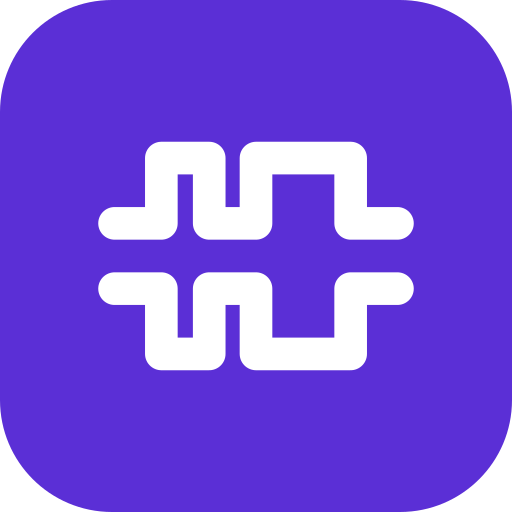

<!-- @dsCard group="Brand" height=300 subtitle="Lockup, mark and tiles on both grounds" -->
<div class="cde-root" style="display:grid;grid-template-columns:1fr 1fr;min-height:300px;">
  <style>
    .lg-pane { display:flex; flex-direction:column; gap:var(--space-8); padding:var(--space-8); background:var(--surface); color:var(--ink-muted); min-width:0; }
    .lg-row { display:flex; align-items:center; gap:var(--space-8); flex-wrap:wrap; }
    .lg-cap { font:400 11px/16px var(--font-sans); color:var(--ink-muted); }
    .lg-tile { width:32px; height:32px; }
    .lg-live { font:700 20px/24px var(--font-wordmark); letter-spacing:0.06em; color:var(--ink); text-transform:uppercase; }
  </style>
  <div class="lg-pane">
    <div class="lg-row"></div>
    <div class="lg-row">
      
      
      
      
      
      
    </div>
    <div class="lg-row"><span class="lg-live">CAN Data Extract</span><span class="lg-cap">wordmark style, live text</span></div>
    <div class="lg-cap">Light ground: cde-lockup.svg, cde-mark.svg, cde-favicon.svg</div>
  </div>
  <div class="lg-pane" data-theme="dark">
    <div class="lg-row"></div>
    <div class="lg-row">
      
      
      
      
      
      
    </div>
    <div class="lg-row"><span class="lg-live">CAN Data Extract</span><span class="lg-cap">wordmark style, live text</span></div>
    <div class="lg-cap">Dark ground: cde-lockup-paper-trace.svg, cde-mark-dark.svg, cde-app-icon.svg</div>
  </div>
</div>
